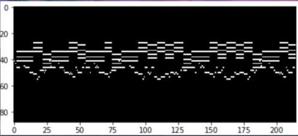

From the uplifting beats featured in his debut album “The College Dropout”,
to the unorthodox blend of synthetics and vocals of “Graduation”, to the christian hymns of “Jesus is King”,
Kanye West continues to defy established musical patterns while also creating melodies that have rocked the 21st century.
In this project, we will be using RNN’s (recurrent neural networks) to generate music that aims to mimic his style.
Peep the results below. 👀
So Like...How Does This Work?
RNN and music generation go together like peanut butter and jelly, like Jim and Pam, like Rings and 💛Kobe💜.
RNN's take in sequential data (say music for example) as input and tries to look for some kind of pattern.
If our model finds this underlying pattern of the sequential data, we can use the model to predict what
should come next given some arbitrary starting point. In the case of music generation, we want to predict the next sound.
Piano Music
Spoiler Alert: we will be using piano covers of Kanye West's music for this project. Why? Short answer: it's easier.
When it comes to piano music, it is clear which notes are being played at any given time. How do we know which notes are
being played at a given time? ~cue MIDI files~. Midi files, also known as musical instrument digital interface,
is essentially a sequence of notes over a time period. The image below is what a .midi file looks like.

You can think of this as the “technological” way of reading piano sheet music. The x axis (length of the song)
acts as the time while the y axis (size 88 because there are 88 playable notes) lets us know which notes are being
played. We can turn this into a matrix of size 88 x tn where tn is the length of the song. For example,
the column t91 will tell us which of the 88 notes are being played at time step 91.
Once we have our tn columns, we feed each column ti , 1 ≤ i ≤ n,into our model one at a time.
Note that the vector ti can have multiple 1’s throughout the vector. One could find a way to encode
this vector, but for the sake of space, inputting an 88x1 vector will work as well.
Data
This is where the fun begins. As mentioned earlier, piano covers for various Kanye West songs
populate my dataset. Did I do these covers on my own? Nope. Instead, I converted piano covers
of Kanye's songs on youtube to midi files. (Links to all the youtubers who supplied the beautiful covers
on the github page for this project). Once I had about 100 minutes of Kanye Piano Cover midi files,
I split the data into a train set (50%), test set (25%), and validation set (25%).
Code
This is where the fun really begins. Huge huge huge thank you to James Carpenter and Prince Grover who
developed an ingenious pipeline that allows for midi files to be used in the forward and backward
steps of deep learning. This project would not exist without their code (link to their work in the github
page for this project).
Here is a brief overview of what our code does
Load in our train, test, validation sets
Train various models using different pre-training parameters (hidden size, epochs, learning rates)
Choose the model that gave us the best validation score, and save the pre-training parameters
Do a sanity check by testing our model against our untouched test set
Build a new model with the saved pre-training parameters
Train this model with the entire dataset (train, test, valid)